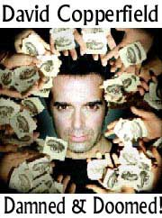

El doctor Edward T. Lu, astronauta, salió de órbita hace dos semanas volviendo de un viaje de más de seis meses como oficial científico en la Estación Espacial Internacional (ISS por sus iniciales en inglés). El doctor Ray Beiersdorfer (¡a quienes los afortunados entre ustedes conocerán en The Amaz!ng Meeting!) me informó que tipeando algunas cosas podría ver su aterrizaje por medio de Internet. ¡Diablos! Eso sí que da miedo. Señalaré que todos los rusos visten traje y corbata en su Centro de Control de Misión, mientras que la NASA está un poco más relajada. Y cada paso del procedimiento de aterrizaje se conduce y completa antes de hacer cualquier anuncio —por si hay algún problema, quizá— pero saber que la “llamarada” se producirá en un momento muy preciso, y luego tener que esperar otros diez minutos o algo así para ver si tuvo éxito, puede producir mucha preocupación. Dejaré que Ed vuelva a aprender a caminar y otras habilidades simples antes de molestarlo con preguntas. Sé que va a perseguirme para averiguar cómo realizamos nuestro Primer Truco de Cartas en el Espacio Exterior, pero mis labios están sellados…
Durante los seis meses de Ed como Oficial Científico a bordo de la ISS, se produjo un suceso muy interesante. Hubo flashes misteriosos de luz que vio mientras estudiaba la aurora de la Tierra desde órbita. Ed fue un investigador astrofísico antes de convertirse en astronauta en 1984, y estima que pasó unas 100 horas examinando las auroras polares en su medio año en el espacio. De hecho, describió épocamente el espectáculo de las luces de la aurora, que se producían muy por dbajo de la altura de la estación (380 kilómetros). Informó las hermosas oscilaciones y parpadeos que resultan de las variaciones naturales de las partículas solares entrantes atrapadas por el campo magnético de la Tierra. Y el Sol estaba aumentando hacia su máxima actividad en los últimos días en que Ed estaba allí notando esas maravillas. Pero en tres ocasiones (11 de julio, 24 de septiembre y 12 de octubre) vio algo marcadamente diferente que lo confundió: flashes tan brillantes como las estrellas más brillantes, que duraron sólo un segundo y luego se volvieron a apagar. En una oportunidad, llamó al tripulante Malenchenko para que se acercara a la ventana, y él también presenció los estallidos.
Ahora bien, los locos de los OVNIs que hay por ahí disfrutarán considerando esto como apoyo adicional para la noción de que los extraterrestres vienen a buscarnos, pero Ed Lu tiende a ser algo más racional. Notó que estos fenómenos eran muy diferentes de los relámpagos retinales, aleatorios pero inofensivos, que muchos astronautas experimentan cuando los rayos cósmicos pesados llegan a sus globos oculares. Sí, por estar menos protegidos que nosotros bajo la atmósfera de la Tierra, los astronautas y los cosmonautas son rociados con más rayos cósmicos de los que experimentamos nosotros. “Ven” pequeños relpampagos que registran el paso de los rayos cósmicos a través de sus centros visuales. Científico verdadero como es, Ed trató de excluir otras explicaciones obvias. Los relámpagos que él y Malenchenko vieron no le parecían la luz solar reflejándose en las partículas de polvo que acompañan a la ISS. Esos relámpagos duraron más de un segundo. Ni eran, piensa, meteoros entrando a la atmósfera debajo de la ISS; se hubieran visto como trazos lineales. Dado que los relámpagos misteriosos sólo aparecieron en dirección de la aurora, Ed sabe que las condiciones visuales eran inapropiadas para que fuera un satélite u otro objeto artificial. También verificó mapas del clima, que no mostraron tormentas eléctricas bajo él en el momento de sus observaciones. Todo esto lo condujo a la conclusión tentativa de que había visto un fenómeno hasta ahora no informado, probablemente asociado con la aurora.
En una entrevista telefónica desde la estación espacial con la revista Nature, Ed comentó sobre su descubrimiento: “Es bueno exponer esto, así la gente que sabe más puede empezar a pensar sobre ello”. Sí, claro que lo es. Probablemente pasen varios meses antes de que Ed pueda examinar la evidencia en detalle y discutirla con especialistas en autoras, quienes deberían estar realmente muy interesados en algo tan nuevo e inesperado.
Ahora bien, esto no fue un experimento planeado; fue simplemente una serie de observaciones que Ed hizo mientras realizaba sus tareas habituales. Pero esta es la clase de cosa (un evento espontáneo) que los científicos son entrenados para observar y grabar. Piensen en Fleming y el descubrimiento de la penicilina, y tendrán un buen paralelo. Bien podría ser que tengamos un fenómeno aquí al que se bautice con el nombre de Ed Lu; eso es lo que pasó con los cinturones de Van Allen, ¿recuerdan?
El lector Ray Trinidad, de Tauranga, Nueva Zelanda, escribe:
Acabo de pasar dos semanas, de manera irregular, leyendo todo lo que aparece en el archivo de comentarios en su página web. Qué puedo decir, salvo: “¡Guau!”. Señor, es usted una inspiración para todo aquél que aprecia el pensamiento claro y el discurso racional. No puedo decir bastantes cosas buenas sobre el trabajo que usted hace, y he estado imprimiento extractos de su material, citando la fuente por supuesto, y compartiéndolo con amigos y familia.
No hace falta decir que las reacciones han sido muy frías y hostiles. Mi madre y hermanas son cristianas profundamente devotas; aunque mi madre y mi hermana menor son cristianas fundamentalistas renacidas, y mi otra hermana es lo que se llama una “católica renovada carismática”, aunque qué tiene que ver el carisma con ello, no lo sé. También soy un artemarcialista con conocimiento de varios sistemas de combate orientales y occidentales, y el material que usted escribió sobre el grupo Bambú Amarillo y su uso de la “lucha psíquica” fue especialmente interesante. Presentaré este material por ahí a otros artemarcialistas que conozco, pero puedo afirmar con confianza que una justa amalgama de los comentarios que recibiré será “Sí, hay muchos fraudes en las artes marciales, pero mi sistema/escuela/sensei/maestro de mi sensei/fundador del sistema/maestro de la secuela/hermano del peluquero de la esposa de mi sensei puede hacerlo de verdad”.
Nací y creí en las Filipinas, hogar de los “falsos sanadores”, donde la creencia en todo lo espiritual, psíquico, místico, religioso o pseudo religioso invade todos los ámbitos. Amuletos (anting-anting), palabras mágicas, plegarias especiales (orascion), brujería (kulam, barang), dioses vivientes, y toda clase de cultos y movimientos religiosos son parte de la vida diaria. La gente lleva amuletos para espantar balas, cuchilladas, mala suerte, ganar en las apuestas, o atraer al sexo opuesto.
Los psíquicos, clarividentes, adivinos (llamados manghuhula, literalmente “el que adivina”), consejeros espirituales, “expertos” en feng shui, brujas, herbalistas, lectores de palmas, lectores de cartas, interlocutores de los muertos, astrólogos y “sanadores” obtienen su ganancia cada día. Los periódicos populares también publican titulares del tipo “¡Monstruo mitad humano mitad serpiente cobra otra víctima!”.
Una cosa graciosa de todo esto es que el sistema de creencias puede ser ajustado para incluirlo todo. No es extraño que una familia devota tenga un altar en el living y estatuas de santos o del Papa en cada habitación, que vayan a misa por la mañana, consulten un médium por la tarde, y dejen comida en el jardín por la noche para aplacar a los enanos que viven en el jardín. Recuerdo a uno de los sacerdotes en la universidad (fui alumno en una dirigida por jesuitas) que realmente estaba convencido de los viajes astrales. También se lo veía con frecuencia hablándole a los árboles en todo el campus.
Supe de una famlia que tenían una escena de la crucifixión de (según decían) trescientos años de antigüedad tallada en madera. Afirmaban que los intentos de fotografiar el altar siempre fallaban. Cuando expresé mi deseo de hacer un intento de fotografiarlo, me dijeron que no lo hiciera, ya que “disgustaría” a los espíritus que vivían en él. Supuestamente Jesús y las dos Marías no encontraron lugar en otro lado y no querían ser molestados por los paparazzi.
Recuerdo una tarde en la que salí a hacer una diligencia y me encontré con un mago callejero que hacía unos trucos. Uno de ellos era el viejo truco de los “anillos mágicos” que hacían “desaparecer” una moneda ubicada bajo los anillos. Yo sabía cómo funcionaba el truco, pero tenía unos minutos libres así que me quedé a ver el espectáculo. Lo que me sorprendió no fue la representación, sino la reacción de la audiencia. Oí que se intercambiaban comentarios del tipo de “Debe estar usando una plegaria especial”, “Es su amuleto el que lo consigue” y “Debe de ser de una familia de brujas”… cualquier cosa salvo “Qué buena ilusión”.
También admitiré que una de mis tías cree que David Copperfield irá al infierno porque “¡… tiene un pacto con el Diablo!”. Espero que nunca vea a David Blaine, ya que puede que sea el límite de lo que su mente puede soportar. También cree que por cada rosario que reza, resta un año de su tiempo en el purgatorio.
Ahora vivo en Nueva Zelanda, y aquí las cosas no son mucho mejores. Abundan la homeopatía, el feng shui, las líneas directas psíquicas, la aromaterapia, la medicina alternativa, la terapia de cristales y otras formas de charlatanería médica. La TV muestra avisos de “bajocobijas magnéticos”. Deslice uno bajo su cama, y los imanes hacen el resto. ¡Se vendieron cien mil! El alcalde de Auckland, la ciudad más grande aquí, promociona los beneficios del polen de abeja. Bueno, lo promocionaba, hasta que se descubrió que era uno de los directores de la compañía que lo vendía. Las farmacias venden productos herbáceos a la par de los remedios homeopáticos. Se ofrecen cursos en iriología, irrigación colónica, terapia de color, y los grupos de apoyo a los secuestrados por OVNIs se reúnen cada jueves.
Hace poco, Nueva Zelanda apareció en las noticias mundiales, tristemente convertida en un hazmerreír, cuando se detuvo la construcción de una autopista debido a la presión de una tribu maorí (los polinesios que fueron los primeros en inmigrar a Nueva Zelanda). Aparentemente una parte de la autopista violaría el hogar de un taniwha, un espíritu guardián que habita el agua. No recuerdo el resultado de esto, pero estoy seguro de que se hizo algún arreglo para ubicar al espíritu. En la políticamente correcta Nueva Zelanda, hay que tener en cuenta incluso a las entidades invisibles.
Aquí hay comunidades que viven en tipis (aunque ninguna de ellas es aborigen norteamericana), gitanos que viajan de ciudad en ciudad (aunque resultaría muy difícil encontrar uno de ascendencia romaní) y “centros de retiro” ubicados en ubicaciones “espiritualmente significativas”. Supongo que eso significa “terrenos de alto costo con excelente vista”.
Fui a la biblioteca local para ver si podía pedir prestado alguno de los libros de usted, y no encontré uno solo de ellos. Ni uno. Los únicos libros que usted recomendó que pude encontrar fueron “El mundo y sus demonios” de Carl Sagan y “Bad Astronomy” de Philip Plait. Pregunté con cuánta frecuencia los pedían prestados y el bibliotecario dijo “Ah, esos no son populares en lo absoluto”. Tienen, sin embargo, libros sobre OVNIs, la Atlántida, el espiritismo, los fantasmas, la lectura de palmas, el feng shui, y “Cómo aumentar sus poderes psíquicos”. Algunos de ellos tienen listas de espera que otros autores envidiarían.
Me doy cuenta de que estoy despotricando, y no quiero quitarle más tiempo; concluiré dándole nuevamente las gracias, y diciéndole que si alguna vez viene a la Tierra de la Gran Nube Blanca, estaré definitivamente en primera fila en sus charlas.
No hay futuros planes de visitar Nueva Zelanda, Ray, pero viajo a Finlandia y a Suecia en un par de semanas… Parece que me necesitan en todas partes.
El lector Ken Finger nos dice:
Debería complacerle saber que su estimada colega en la búsqueda de la verdad, la afamada filósofa psíquica Sylvia Browne, aparentemente ha dado su respuesta al desafío y asimismo planteado un desafío propio en su nuevo libro “Visitas de la vida después de la muerte: La verdad sobre los encantamientos, los espíritus y las reuniones con los seres amados perdidos” (primera edición, septiembre de 2003). ¡Hey, finalmente tenemos la verdad, justo a tiempo para Halloween!
Luego de hojear la introducción en la librería, no pude resistirme. Sí, perdóname, Padre, porque he pecado y comprado el libro. Pero me dije que de todos modos sería un superventas, así que darle derechos de autor por una copia no haría diferencia; además sería un buen ejercicio para un pensador crítico en ejercicio. Lo primero que hay que notar sobre el libro es que no hay bibliografía, ni índice, ni notas al pie o al final. Me resulta extraño de un libro que afirma presentar la verdad sobre un asunto tan extraordinario. Sni embargo, esta es mi primera travesía en la “obra” escrita de la señora Browne, así que quizá mis expectativas están fuera de lugar.
A primera vista me sorprende que alguien crea todo esto, pero luego, a medida que avancé en ciertos relatos, me indigné, porque sé que dado que la gente cree, ella realmente está sacando ventaja de su credulidad en formas irresponsables. Citaré sólo un ejemplo. Esta es la última línea de una carta que describe la muerte por arma de fuego del hermano de la persona que escribe, que fue caratulada como suicidio:
Si puede decirme qué sucedió, o al menos decirme cómo puedo ayudar a que Mark encuentre paz, realmente se lo agradeceré. —N.S.
La respuesta de Sylvia:
Primero lo primero: esta muerte no fue un suicidio, fue el resultado de un homicidio completamente al azar, un simple y triste caso de una víctima que estaba en el lugar equivocado en el momento equivocado. Y aunque el asesino se libró de este crimen en particular por un tecnicismo, está preso con cadena perpetua sin posibilidad de salir bajo palabra por otro homicidio que cometió menos de un año después por el que se lo acusó, así que se encuentra felizmente fuera de las calles, tras las rejas, y sufriendo.
Esto es tan obviamente peligroso que no necesito analizarlo para usted, pero hago notar que ni siquiera está claro que la carta del hermano sobreviviente (N.S.) es real o que cualquier carta de cualquier lector en ese libro es real; Sylvia nunca da los nombres de ninguna fuente y podría simplemente estar inventándolo todo (en lugar de usar cartas verdaderas e inventar las respuestas). Los métodos del libro son tan malos que estoy francamente sorprendido; esperaba un nivel de elaboración y habilidad mucho mayores por parte de una figura tan conocida a nivel nacional. Normalmente uno esperaría que la gente más exitosa en cualquier disciplina fuera la más talentosa. Si esto es lo mejor que la profesión psíquica tiene para ofrecer, el que tenga siquiera una audiencia es un triste testimonio sobre nuestra sociedad actual.
Pensé que podría interesarle especialmente algo que ella dice en su introducción:
Para los miles de nosotros que colaboramos en este libro en particular, y para los muchos millones que ya no se preguntan más que nosotros si hay una vida después de la muerte, están aquéllos que siempre estarán preparados con una lista de útiles explicaciones para lo que “pensamos” que vemos, oímos y sentiimos. Entre las más populares se encuentran “histeria causada por el dolor”, “privación de oxígeno” y variaciones sobre los conceptos “enfermedad mental” y “estafa”. En lo que esos escépticos y “expertos” normalmente insisten, sin embargo, es la misma exigencia cínica, una y otra y otra vez, que se reduce a lo siguiente: “Prueben que hay vida después de la muerte”.
Mis comentarios: Nótese que ella sabe que está en terreno bastante seguro porque se dirige a su propia audiencia, supuestamente personas crédulas que desean creer sin pruebas y “no se preguntan…”. Continúa diciendo:
Tengo sesenta y seis años, y nunca dudé ni un instante de que hay vida después de la muerte. Los miles de nosotros que contribuimos a este libro, en la tierra y más allá de ella, no lo dudamos. Los millones que nosotros representamos no lo dudan.
Mis comentarios: Esto es pensamiento sociocéntrico clásico: es verdad porque nosotros pensamos que es verdad (incluso los que estamos más allá de esta tierra). Esta creencia está tan firmemente establecida en quiénes son que es vergonzoso (y cosas peores) admitir que puede ser falso. Además, nótese como nadie pone en duda nada. ¡Es fácil estar convencido de que uno tiene razón si nunca se duda nada ni se piden pruebas por más estrafalaria que sea la afirmación! ¿No sería un mejor argumento que ella hubiera atravesado períodos de duda y luego se convenciera gracias a alguna clase de prueba o algo? ¿Cualquier cosa? Supongo que su audiencia no le pide ni siquiera ese nivel de convicción. Sigue:
Dios ciertamente no lo duda, ya que Él es Quien nos dijo que es verdad desde el principio, y creemos en Su palabra para todo.
Mis comentarios: Obviamente añadir ahora la autoridad de Dios lo hace irrefutable, ¿verdad? Bien, si ella cree en “Su” palabra para “todo”, me resulta curioso que quiera invocar su autoridad para apoyar su afirmación sobre esto, ignorando convenientemente a la misma autoridad que afirma que “El hombre o la mujer que estén poseídos por un espíritu, o que practiquen la adivinación, serán muertos a pedradas y serán responsables de su propia muerte” (Lev. 20.27, New Revised Standard Version 1). Bueno, es eso buscarle la quinta pata al gato, así que sigamos:
No somos los que tenemos un problema con esto. Es usted.
(¡Creo que está hablando de usted, señor Randi!)
Así que ¿por qué seguir golpéandonos nosotros mismos tratando de probar algo que ya sabemos con certeza absoluta?
Mis comentarios: ¿en qué forma ella ha intentado probar algo? Con esa lógica todavía creeríamos que la Tierra está inmóvil en el centro del Universo. Millones de personas lo creyeron con certeza absoluta durante milenios, así que ¿por qué molestarse con los hechos? ¡Sólo se interponen en nuestro camino! Y finalmente:
Aquí está mi sugerencia para los escépticos y los “expertos”, para un estimulante cambio de ritmo. Ya probamos que hay vida después de la muerte. Lo hemos probado mucho más allá de nuestra propia satisfacción. De ahora en adelante, hagámoslo así: Prueben ustedes que no la hay.
Mis comentarios: ¡Bien hecho, muchacha! ¡Esto es un testimonio del bajo (inexistente) nivel de “prueba” que sus seguidores aceptan gustosos! Pero también, creo que habla de la potencia intelectual de su audiencia. Puedo imaginarme a los fanáticos de Sylvia en todas partes felicitándose con entusiasmo porque ella realmente refutó a los escépticos. “Jaque mate”, exclamarían si supieran lo que significa, aunque hasta un pensador crítico principiante reconocería las groseras falencias de su desafío para probar la negación. Ya que no podemos probar que no hay vida después de la muerte, debe haberla. Del mismo modo los mil ángeles en la cabeza de este alfiler que tengo en la mano deben existir, al igual que las hadas que salen de mis jardines por la noche, y así sucesivamente. Pero me pregunto si ella sabe cuán defectuoso es este argumento y lo usa de todos modos, o si ella cree que es una ruta apropiada para seguir. Peor aún, ¡quizá es lo mejor que puede lograr luego de 66 años y al menos 7 libros! Y aun si ella tiene la certeza de millones y aun si la afirmación tiene miles de años de antigüedad, la carga de la prueba recae sobre los que hacen las afirmaciones extraordinarias, no sobre los que piden pruebas. La carga de la prueba no la revierte el tiempo, no tampoco el número de creyentes.
Así que creo que tiene la respuesta a su desafío… ¡si usted decide aceptarla! Y creo que me voy a divertir leyendo este libro; aunque sospecho que puede volverse tan tonto para ser aburrido, luego de un tiempo.

Bueno, Ken, quizá estoy a punto de alegrarte el día. Como dije la semana pasada, ¡el obstáculo final para la aceptación de Sylvia Browne del desafío de la JREF (el que ella aceptó, hace tanto tiempo) fue eficazmente retirado! Sí, el lunes pasado le envié esta carta certificada a Larry King, la cual se explica por sí misma:
Larry Kingc/o CNN, 820 1st StreetWashington, DC 20002Señor King:
Su invitada habitual Sylvia Browne ha presentado muchas excusas para no cumplir el acuerdo que realizó con usted y esta Fundación, en su programa de la CNN, de que aceptaría participar en una prueba por nuestro premio de un millón de dólares. Ese acuerdo (que ella estaría disponible para tal prueba) fue realizado hace 970 días.
La primera excusa para no proceder con la prueba es que tenía forma de ponerse en contacto conmigo. Una psíquica, ¿y no puede usar una guía telefónica? Ya que ella afirma ponerse en contacto con los muertos con frecuencia, contactar a una persona viva no debería haber sido un problema difícil para ella. Resolvimos eso enviándole nuestra dirección de correo electrónico, dirección postal, y números de teléfono y fax. Aún así no obtuvimos respuesta.
Lo siguiente que dijo es que no iba a tratar conmigo porque soy una “persona sin dioses”. Para eso, admito, no tengo solución.
Su última excusa (expresada en el programa de usted) es que ahora exige que el millón de dólares se ponga en depósito, para asegurarse de que recibirá el premio, un premio que anteriormente ella había rechazado desdeñosamente, diciendo que no estaba interesada en el dinero. Esto parece un giro extraño de los acontecimientos, pero aunque creíamos previamente que perderíamos el interés sobre la cuenta si la pusiéramos en depósito, y nuestras reglas afirman específicamente que no se harían tales consideraciones para ningún aspirante, en el caso de la señora Sylvia Browne hemos decidido hacer una excepción. Hemos consultado a Goldman-Sachs, y ahora nos informan que por medio de una dispensa especial podremos hacer esto sin pérdida de ingresos. Esto debería complacer a la señora Browne, ya que ahora no hay impedimento en su camino para que proceda a aceptar el procedimiento de prueba.
Anteriormente, hemos enviado cartas y otra documentación por correo certificado a Sylvia Browne. Sin embargo, este material ha sido rechazado por la oficina de la señora Browne, y se nos devolvió sin leer. Heremos todo intento posible para entregar en mano una copia de la carta actual en su oficina.
Le hemos enviado a usted prueba fehaciente que establece la existencia del premio de un millón de dólares de la JREF, así como la disponibilidad de dicho premio, y toda esa evidencia también fue publicada en nuestra página web. La señora Browne se ha rehusado a aceptar dicha evidencia.
En los 970 días desde que Sylvia Browne aceptó, en “Larry King Live”, a someterse a la prueba de esta Fundación, ella no se ha puesto en contacto con nosotros. Usted afirmó, en su programa del 16 de mayo, que le complacería “hacer arreglos” para que la señora Browne sea informada sobre este asunto. Ya que usted, señor King, puede tener más posibilidades de acceder a esta persona, le pediría que le informara de estos últimos hechos, para que ella se apresure a cumplir su acuerdo previo para someterse a la prueba.
Sólo falta una cosa en este esquema: Goldman-Sachs requiere, como parte del proceso de poner el dinero en depósito, que encontremos una persona que actúe de “agente depositario” del dinero del premio del millón de dólares. Esto simplemente significa que el agente tendrá completo control sobre la distribución del dinero del premio luego de la verificación de la afirmación de la señora Browne. Ya que la señora Browne parece confiar en usted, señor King, y tendría buenas razones para creer que usted actuaría en esta función de “agente depositario” de forma justa y correcta, le solicito que ejerza este rol. Esto sería por un tiempo muy limitado, por supuesto, desde el momento en que la señora Browne acepte la concreción de su pedido hasta que se haya hecho la prueba y se haya llegado a la respuesta. Le pido que por favor me informe su decisión sobre este tema.
Por favor tenga presente que es Sylvia Browne, no esta Fundación, quien ha evitado el desafío. Ahora que todas las condiciones requeridas por la señora Browne han sido cumplidas, debería pasar poco tiempo antes de que podamos realizar la prueba. Sin embargo, dado que yo había convocado a “creyentes” para ser sujetos de la prueba, y ya pasaron dos años y ocho meses, algunos de los voluntarios han muerto y otros han perdido interés. Creo que requeriría dos semanas encontrar un número suficiente der personas para este propósito. Por supuesto lo mantendré informado del progreso de este esfuerzo.
Nótese: con la excepción de la cláusula de “consideraciones especiales” mencionada más arriba, estarán en efecto las reglas para el desafío del millón de dólares de la JREF tal como se mencionan en nuestra página web si y cuando Sylvia Browne se ponga de acuerdo en que todos sus requisitos han sido cumplidos y en que procederá con la prueba.
Gracias por leer esta carta, señor King, y espero que podamos esperar llevar a cabo finalmente la prueba de las afirmaciones de Sylvia King de que puede ponerse en contacto con los muertos, y que lo hace con regularidad, como profesión.
Tengo la intención de esperar dos semanas antes de llegar a la conclusión de que el Sr. King declina servir como agente depositario en este tema o simplemente no responde a este pedido. En ese caso, le haré la misma oferta a Montel Williams. Si ninguno de estos caballeros muestra interés en servir en tal capacidad, le asignaré la tarea a una compañía financiera que se encarga de cumplir esta función. Sin embargo, no haré ningún esfuerzo para obtener los diez voluntaios que necesitaremos para la prueba, hasta que la señora Browne exprese (¡de nuevo!) que ahora está preparada para hacer la prueba. Puede que esperemos mucho, mucho tiempo… Por favor, si usted es un voluntario potencial como sujeto de esta prueba, no se presente todavía. Sylvia ha mostrado que no es muy rápida en contestar, aunque no puedo imaginarme por qué, con un millón de dólares fácil de obtener esperándola.
En cualquier caso, ahora hemos subsanado todas y cada una de las objeciones realizadas por Sylvia Browne, salvo que no le caigo bien. Debo preguntarle, como hice ante la negativa de Uri Geller para ser sometido a la prueba: ¿no sería muy satisfactorio, si no le caigo bien, quitarle el premio del millón de dólares a la JREF? Ah, pero no estamos tratando con simples mortales, gente; estas son personas elegidas especialmente, dotados, personas que no podemos esperar entender.
El lector Wayne W. Urffer:
Soy maestro, un bright, y un devoto fan de su sitio web. Me gustaría contarle una experiencia reciente que tuve.
En la Conferencia Nacional de Preparatorias Técnicas, una conferencia para profesores de tecnología en Nashville, Tennessee, a principios de este mes, Jack Canfield era el orador invitado en nuestra reunión de apertura. Canfield es el creador de la serie de libros “inspiradores” “Sopa de pollo”. Durante su discurso, Canfield quiso señalar que si los estudiantes no creen que tienen limitaciones, actuarán como si no tuvieran limitaciones. En general, esto es buena teoría de la enseñanza: no desalentar a los estudiantes diciéndoles lo que no pueden hacer.
Sin embargo, Canfield ilustró su punto diciendo (estoy parafraseando): “En Europa, Uri Geller dobla cucharas usando sólo el poder de su mente. Y los padres europeos no les dicen a sus hijos que no pueden doblar cucharas con sus mentes. En consecuencia, hay niños en toda Europa que pueden doblar cucharas con el poder de sus mentes”.
Ahora bien, Canfield es un autor “inspirador”, así que esto no me sorprendió en especial. De hecho, considero de esperarse que deforme la verdad para que sus “inspiraciones” más “reales”. ¡Lo que me resulta sorprendente es la cantidad de profesores en la habitación que asentían aprobatoriamente! Muchos profesores de las Preparatorias Técnicas son profesores de ciencias, matemáticas, etc. Realmente me desilusionó que tantos de ellos no pudieran o quisieran confrontar la afirmación de Canfield sobre los “poderes” de Uri Geller. Lo peor de todo, ¡mis colegas hicieron horas de cola para que Canfield les autografiara copias de sus libros! ¡Ugh!

No estoy muy sorprendido, Wayne. Cada año, doy conferencias para grupos de maestros (con frecuencia son maestros de ciencias) y aunque el mayor porcentaje de la audiencia expresa su aprecio por mi actitud y discurso pro-ciencia, cierto número de ellos simplemente se aparta de la conferencia, porque no quieren que se cuestionen sus ilusiones preferidas. Recuerdo que hace unos pocos años, una maestra entre tales maestros molestos se me acercó con gran indignación, diciéndome: “Sí, enseño ciencia, señor Randi, pero también sé que la ciencia no tiene todas las respuestas, ¡así que no dejaré que mis estudiantes sean mal informados!”. Esta es una maestra que ni siquiera sabe la definición de la disciplina que enseña; tengo que preguntarme si ella sabe algo útil en lo absoluto.
Max Henderson, del London Times, comenta sobre los lamentables resultados del experimento de la plegaria para pacientes que se realizó hace poco, y el tratamiento del tema en un popular programa de televisión, “Everyman”, en el Reino Unido:
La ciencia no se sorprendió, precisamente, por el resultado de este costoso experimento en probar lo obvio. Esta no fue la impresión que dio el programa Everyman, sin embargo.
Este, dijo el narrador, era un experimento que podía cambiar la forma en que vemos el universo. Se informaron los resultados negativos, pero casi como una idea de última hora. Hubo más énfasis en las “anomalías” de los datos, buscando pequeños efectos. La idea de hacer que la gente rece por los grupos de oración para mejorar cualquier beneficio (incrementar la dosis de plegaria) se veía prometedora. Los resultados, nos dijeron, serían alentadores. Algunos beneficios, dijo el doctor Krucoff, incluso “alcanzaron significación estadística”.
Esto es absurdo: un hallazgo que se aproxima a la significación estadística es, por definición, estadísticamente insignificante. Es lo mismo que estar un poquito muerto. Aún así, Everyman no refutó esa afirmación. El televidente casual podría ser perdonado por pensar que esta investigación produjo resultados resultados que la medicina normal no puede explicar.
Este es otro ejemplo más de con cuánta facilidad la tendencia de un relato puede depender completamente de los deseos u otros prejuicios del escritor, el editor, el productor o el director de una presentación en los medios. Y, aunque nunca podremos saberlo, puede haber otras fuerzas (financieras o impulsadas por los auspiciantes) que establezcan qué forma se le da al relato. Mark continúa:
La beatificación de la Madre Teresa se asienta en parte en el milagro de Monica Besra, “curada” de un tumor por un rayo de luz emitido por la imagen de la futura santa. Su doctor, sin embargo, dice que su paciente no tenía un tumor, sino un quiste tubercular curado por las drogas que él prescribió.
Me resulta edificante ver cómo el señor Henderson ha tratado tanto la situación de la “plegaria” como la santa acabada de elevar que el Papa ha elegido brindarnos…
¿Adivinen qué? Todavía no recibí respuesta a mi carta certificada dirigida a Jim Thomas en relación con su maravilloso dispositivo de rabdomancia “Treasure Scope”. ¡Caray! ¡Ya pasaron tres semanas! Supongo que no quiere el millón de dólares, pero de lo contrario, ¡más vale que actúe ahora, antes de que Sylvia se lo birle!
Para cerrar, un comentario interesante de Stephen F. Roberts: “Sostengo que ambos somos ateos, yo sólo creo en un dios menos que tú. Cuando entiendas por qué desestimas a todos los otros dioses posibles, entenderás por qué yo desestimo al tuyo”.

Notas
- 1
-
En el original. La traducción es de “Dios habla hoy”, Sociedades Bíblicas Unidas. [N. del T.]
Comentarios
Comments powered by Disqus